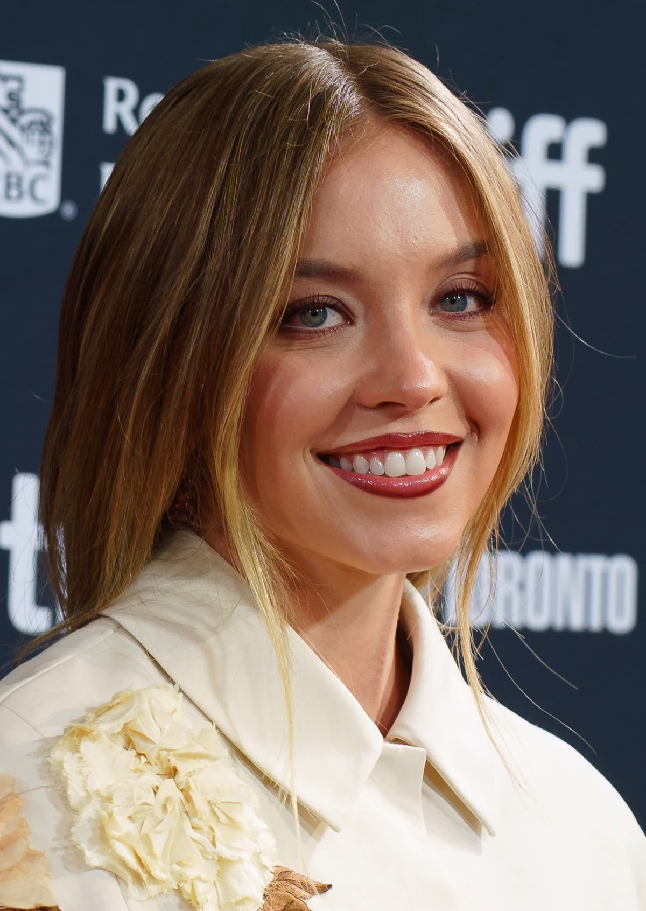
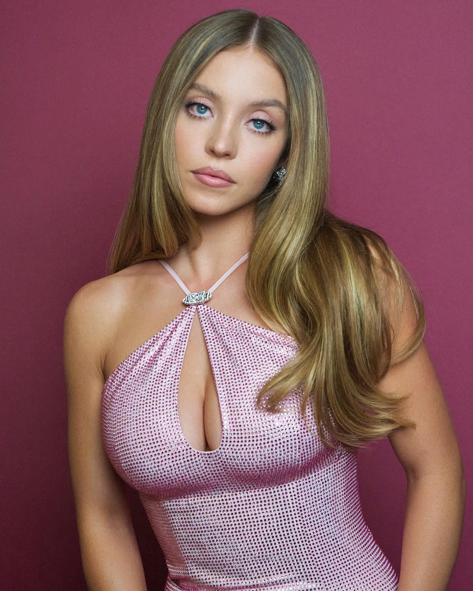
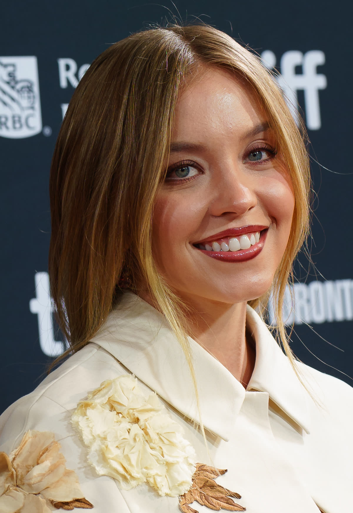
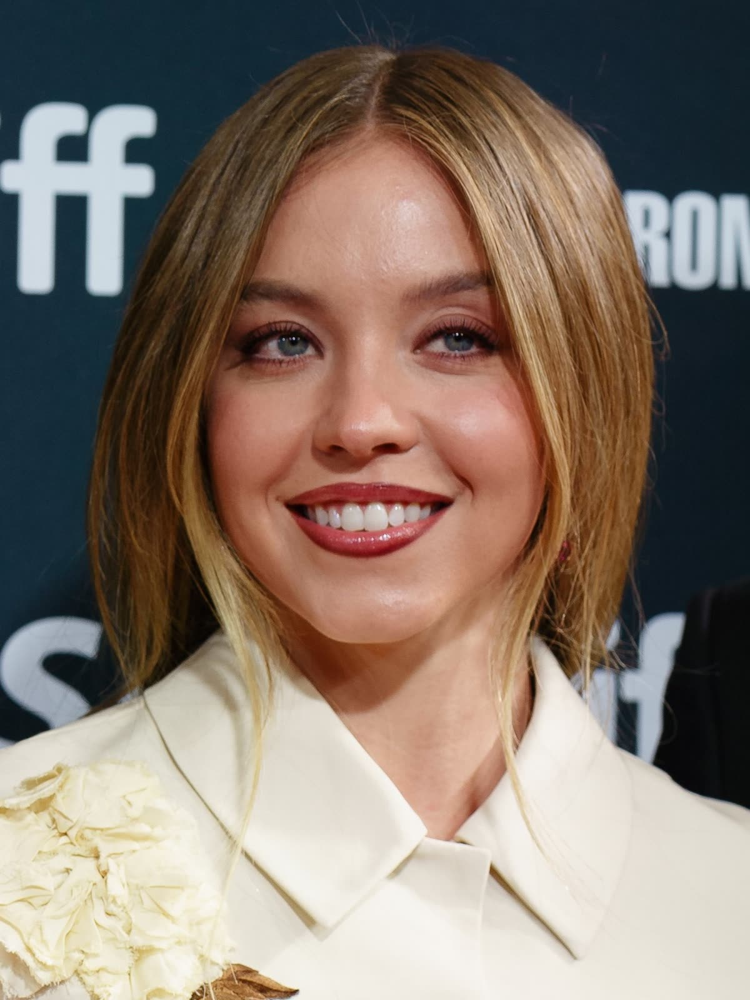
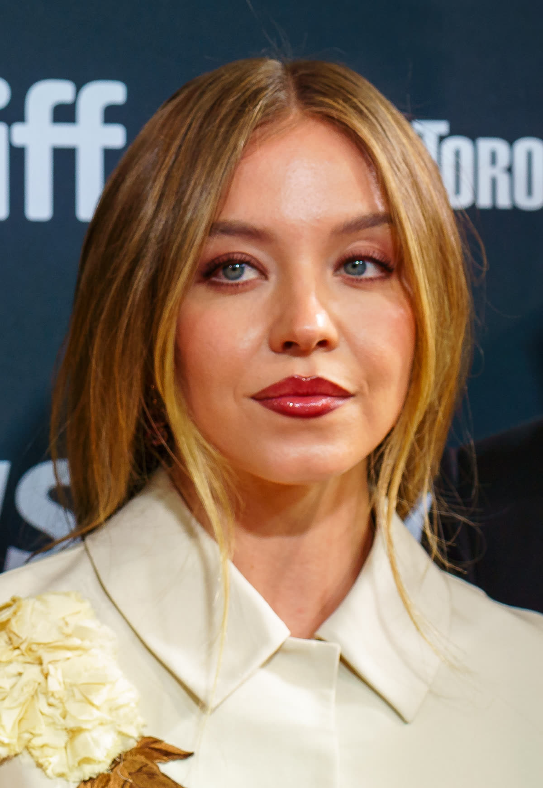
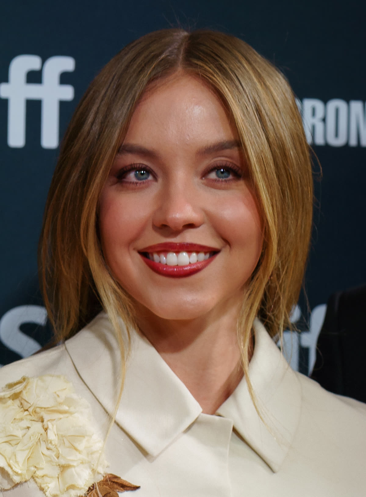

Every Sydney Sweeney headline, in 60 seconds.
Movies, series, casting, box office, interviews, her SYRN brand and her ads: the latest Sydney Sweeney news, with every source linked. Watch the Shorts on YouTube.


Sydney Sweeney Name Pops Up Over Kendall Jenner's Tequila Ad
Instagram commenters linked Kendall Jenner's new 818 Tequila ad to Sydney Sweeney's Novig spot, though Jenner has not said it was inspired by it.
November 13, 2026

Sydney Sweeney's Honey Trap Dark Comedy Lands Sales Agent
Littermates, a dark comedy produced by Sydney Sweeney's Honey Trap, has signed with Dawson for sales at the American Film Market, Screen Daily reported.
November 13, 2026

Sydney Sweeney's SYRN Goes Full Holiday With New Campaign
Sydney Sweeney's SYRN loungewear brand unveiled a winter-themed holiday social media campaign, Reality Tea reported, as the shopping season begins.
November 13, 2026

Sydney Sweeney's SYRN Takes On Kim Kardashian's SKIMS This Christmas
Sydney Sweeney's SYRN and Kim Kardashian's SKIMS launched rival holiday campaigns, one built around The Grinch and the other around the Kardashian-Jenner family.
November 13, 2026

Sydney Sweeney's Housemaid Hits a Huge Streaming Milestone
The R-rated thriller passed its first 30 days on HBO Max, ScreenRant reported, while a sequel is set for December 17, 2027.
November 13, 2026

Sydney Sweeney Filmed a Tearful Scene Days After That Kiss
Sydney Sweeney was photographed crying on the New York set of The Housemaid's Secret, reportedly days after filming an onscreen kiss with Stephen Kalyn.
November 8, 2026

Sydney Sweeney's Novig Ad: Lost 200K Followers, Then Rebounded
Sydney Sweeney reportedly lost over 200,000 Instagram followers after her Novig ad, then won back about 100,000, according to Newsweek.
November 8, 2026

Sydney Sweeney Reportedly Eyeing a Secret Move to England
The Sun reportedly says Sydney Sweeney viewed a home in Little Tew and is weighing a part-time move to England with Scooter Braun.
November 8, 2026

Sydney Sweeney's Reported Move Has Cotswolds Prices in Focus
The Daily Mail reported that Sydney Sweeney is looking at homes in Little Tew, as celebrity arrivals fuel debate over rising Cotswolds prices.
November 8, 2026

Sydney Sweeney's $69 SYRN Holiday Set Is Here
Sydney Sweeney's SYRN brand released the $69 Snow Problem Flannel Cami and Short Set as part of its latest Christmas campaign, RealityTea reported.
November 8, 2026

Sydney Sweeney's Sleepy Hollow Is Now an Erotic Thriller
Sydney Sweeney is reportedly set to play Katrina Van Tassel in Hollow, Lindsey Anderson Beer's gothic erotic thriller based on her own debut novel.
November 8, 2026

Sydney Sweeney vs Jude Bellingham: The Ad Double Standard Debate
Commentator Kinsey Schofield said reactions to Bellingham's Calvin Klein ad differ from the backlash Sydney Sweeney faced over her American Eagle campaign.
November 7, 2026

Sydney Sweeney Embraces Michele Morrone On Set: What's Going On?
TMZ published set photos of Sydney Sweeney embracing Michele Morrone in New York City and said the moment was a scene for The Housemaid's Secret.
November 7, 2026

Sydney Sweeney Shares a Spooky Road Trip With Scooter Braun
Sydney Sweeney shared Instagram Stories of a fall road trip to Sleepy Hollow with Scooter Braun, including a playful Headless Horseman moment.
November 7, 2026

Sydney Sweeney: Every Major Award Nomination, Checked
Sydney Sweeney has two Emmy nominations, one SAG nod and no Golden Globe nominations. Here is what her awards record shows.
November 7, 2026

Sydney Sweeney Could Soon Be Meghan Markle's Neighbor
Reports say Sydney Sweeney is looking at Cotswolds properties, and a News24 panel joked about her possible famous neighbors, Harry and Meghan among them.
November 7, 2026

Sydney Sweeney's Syrn Christmas Campaign Sparks Backlash
Sydney Sweeney's Syrn holiday campaign drew criticism over its Cindy Lou Who look, while some supporters called the reaction exaggerated.
November 7, 2026

Sydney Sweeney Had to Audition for The White Lotus
Sydney Sweeney has said she had to tape an audition and go through a callback to win Olivia Mossbacher in HBO's The White Lotus.
November 6, 2026

Sydney Sweeney's Sleepy Hollow Movie Reportedly Lands Its Ichabod
Nicholas Galitzine is reportedly in final negotiations to play Ichabod Crane opposite Sydney Sweeney's Katrina Van Tassel in Sony's Sleepy Hollow reimagining, Hollow.
November 6, 2026

Sydney Sweeney Endorsed as the Next Bond Girl by 007 Star
Trina Parks, the first Black Bond girl, told The Telegraph that Sydney Sweeney would be a great fit for Bond 26 as the franchise prepares a new 007.
November 5, 2026

Sydney Sweeney's Biggest Box Office Hit Isn't What You Think
The Housemaid is Sydney Sweeney's top-grossing lead role, but a small part in a Tarantino film still holds her biggest worldwide total.
November 5, 2026

Sydney Sweeney Just Got a Bond Girl's Seal of Approval
Diamonds Are Forever actor Trina Parks told The Telegraph she would love to see Sydney Sweeney as the next Bond love interest.
November 4, 2026

Sydney Sweeney Backed by Former Bond Girl for 007 Role
Trina Parks, who appeared in Diamonds Are Forever, publicly backed Sydney Sweeney for a possible 007 part, though nothing has been confirmed.
November 4, 2026

Sydney Sweeney's Best and Worst Rotten Tomatoes Scores
From Reality at 93% to Madame Web at 10%, here is how critics have scored Sydney Sweeney's films on Rotten Tomatoes.
November 4, 2026

Sydney Sweeney as the Next Bond Girl? A 007 Star Weighs In
Trina Parks, the first Black Bond girl, told The Telegraph that Sydney Sweeney would be a great fit for the next 007 film, though no casting is official.
November 3, 2026
Sydney Sweeney's Reality: Every Line Is Real FBI Dialogue
HBO's 2023 film Reality has Sydney Sweeney speaking the FBI's actual interrogation transcript of Reality Winner, word for word.
November 3, 2026
Sydney Sweeney Started Her Own Production Company: Fifty-Fifty
Sydney Sweeney started Fifty-Fifty Films in 2020, and the company has since backed projects including Anyone But You, Immaculate and Christy.
November 2, 2026

Sydney Sweeney Spotted Kissing Co-Star On Housemaid's Secret Set
Sydney Sweeney was photographed kissing Off Campus actor Stephen Kalyn while filming The Housemaid's Secret in New York City, outlets reported.
November 2, 2026

Sydney Sweeney's R-Rated Rom-Com Is Back on HBO Max Charts
Three years after release, Anyone But You rose from ninth to sixth on HBO Max's U.S. chart, just below Sydney Sweeney's The Housemaid, FlixPatrol data shows.
November 2, 2026

Sydney Sweeney Is Filming The Housemaid Sequel in New Jersey
Set photos published October 28 show Sydney Sweeney shooting The Housemaid's Secret, the sequel to the 2025 hit that earned over $400 million worldwide.
November 1, 2026

Sydney Sweeney Parodies Home Alone in New Syrn Holiday Campaign
Sydney Sweeney's Syrn brand released a Home Alone parody video to launch its Hibernation Nation holiday collection of knitted sets.
November 1, 2026

Sydney Sweeney Recreates Home Alone Scream In New SYRN Ad
Sydney Sweeney played Kevin McCallister in a new Instagram ad for her brand Syrn, which promotes its Hibernation Nation holiday collection.
November 1, 2026

Sydney Sweeney Chased This Horror Movie for 10 Years
Sydney Sweeney first auditioned for Immaculate in 2014, then revived it after Euphoria and produced it; the film earned about $35 million worldwide.
November 1, 2026

Sydney Sweeney Bond Girl Praise, But Odds Say Third Place
A 007 star reportedly said Sydney Sweeney would make a wonderful Bond girl, but Kalshi odds put her third behind Margaret Qualley and Anya Taylor-Joy.
October 31, 2026

Sydney Sweeney's SYRN Reportedly Sold $2M in a Single Day
Page Six reportedly said SYRN's Birthday collection sold out in 24 hours, while its holiday ad drew online criticism. None of the figures are confirmed.
October 31, 2026

Sydney Sweeney and Scooter Braun Step Out in New York
Sydney Sweeney and Scooter Braun were photographed hand in hand in Manhattan's Upper West Side after a day of work on The Housemaid's Secret.
October 31, 2026

Sydney Sweeney Eyed for Dolly Parton Role? Fans Pick Someone Else
Sydney Sweeney is reportedly one of several names linked to a Dolly Parton biopic, and fans are divided. Nothing has been confirmed.
October 30, 2026

Sydney Sweeney: Madame Web vs Anyone But You Box Office
Madame Web grossed about $100 million worldwide, less than half of Anyone But You's roughly $220 million, while Immaculate earned about $35 million on a $9 million budget.
October 29, 2026

Sydney Sweeney Remakes Home Alone In New ET Video
Entertainment Tonight published a video in which Sydney Sweeney plays Kevin McCallister in a Home Alone remake promoting her SYRN holiday launch.
October 29, 2026

Sydney Sweeney's Anyone But You: How a Fourth-Place Film Won
Sydney Sweeney's rom-com Anyone But You opened in fourth place with about $6 million and went on to pass $200 million worldwide on a $25 million budget.
October 29, 2026

Sydney Sweeney Explains Why She Really Took Madame Web
Sydney Sweeney reportedly told GQ UK that Madame Web was a business decision that helped her build a relationship with Sony.
October 29, 2026

Sydney Sweeney's SYRN Reportedly Hits Record Sales Despite Backlash
Page Six reported that Sydney Sweeney's SYRN brand doubled its third-quarter sales over the second and is on track for another record month in October.
October 29, 2026

Sydney Sweeney Gets Backed by a Golf Star in Novig Ad Row
English golfer Charley Hull defended Sydney Sweeney over her Novig betting ad, saying modeling is part of the actress's job, CCN reported.
October 29, 2026

Sydney Sweeney's Anyone But You: $25M Budget, $220M Gross
Anyone But You, the Sydney Sweeney and Glen Powell rom-com, turned a $25 million budget into roughly $220 million worldwide.
October 28, 2026

Sydney Sweeney's $220M Thriller Won't Leave Streaming Charts
ScreenRant reported that The Housemaid and Anyone but You, both R-rated, sat on HBO Max's chart above Sydney Sweeney's other theatrical releases.
October 28, 2026

Sydney Sweeney Ad Backlash: Titmus Reveals Thousands of Hate Messages
Olympic great Ariarne Titmus says thousands of hateful messages followed her criticism of Sydney Sweeney's Novig ad, the Sydney Morning Herald reported.
October 28, 2026

Sydney Sweeney's SYRN Spoofs Classic Christmas Movies
Sydney Sweeney's SYRN brand teased its first holiday shop with an Instagram ad that spoofs classic Christmas movies and previews four collections.
October 28, 2026

Sydney Sweeney Doubles Down on SYRN Holiday Ads After Backlash
Sydney Sweeney kept posting content from her SYRN holiday campaign, including Home Alone recreations, after online criticism of her Cindy Lou Who promotion.
October 28, 2026

Sydney Sweeney's Hidden Decade of Roles Before Euphoria
Years before Cassie in Euphoria, Sydney Sweeney built a TV résumé of guest spots and 2018 roles on Netflix, Hulu and HBO.
October 28, 2026

Sydney Sweeney Loses Top Spot in Bond Girl Odds to Ex Co-Star
Margaret Qualley now leads the next Bond girl betting odds at 33 percent, per BetOnline, with Sydney Sweeney at 25 percent, tied with Anya Taylor-Joy.
October 27, 2026

Sydney Sweeney Says Nude Scenes Can Degrade Female Actors
Sydney Sweeney reportedly said filming nude scenes can degrade female actors, reviving a double-standard argument she has made before, OK Magazine reported.
October 26, 2026

Sydney Sweeney's Car Hobby Is Becoming a Business: Syd's Garage
Backfire News reported a trademark filing for Syd's Garage, a name from Sydney Sweeney's TikTok that may point to a bigger car-focused business.
October 26, 2026

Sydney Sweeney's Sleepy Hollow Thriller Is Filming In Ireland
Co-star Belmont Cameli told Deadline that the Sleepy Hollow retelling with Sydney Sweeney will shoot in Ireland in spring 2027.
October 26, 2026

Sydney Sweeney's Cut Devil Wears Prada 2 Cameo Explained
Writer Aline Brosh McKenna confirmed Sydney Sweeney is not in The Devil Wears Prada 2, and an insider says her planned scene felt out of place.
October 26, 2026

Sydney Sweeney: What Euphoria's Creator Says About Her Scenes
Sam Levinson told The New York Times he weighed a nudity-free final season for Cassie, but Sydney Sweeney disagreed, citing the character's story.
October 25, 2026

Sydney Sweeney's SYRN Slogan Has Swifties Talking
A SYRN product reading "but daddy I love him" led fans to link Sydney Sweeney to Taylor Swift, though neither star has commented.
October 25, 2026

Sydney Sweeney's Name Is Now in a California Voter ID Ad
A California pro-voter ID ad built on the line "I'm Sydney Sweeney" drew praise from BizPac Review and a sharp critique of state voting from The Daily Signal.
October 25, 2026

Sydney Sweeney's Madame Web Hits HBO Max November 14
Madame Web, with Sydney Sweeney as Julia Cornwall, arrives on HBO Max on November 14 after a box office run that Screen Rant says fell short.
October 25, 2026

Sydney Sweeney Joke Puts Ali G in Hot Water
Sacha Baron Cohen's in-character remark about Sydney Sweeney at the Ali G: Who Iz I? premiere reportedly drew calls for him to be cancelled.
October 25, 2026